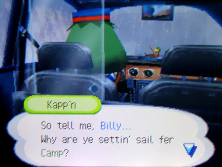
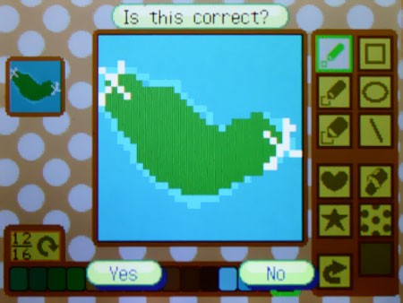
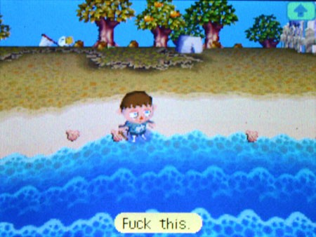
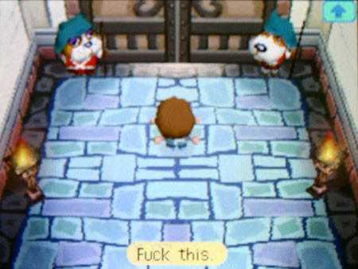
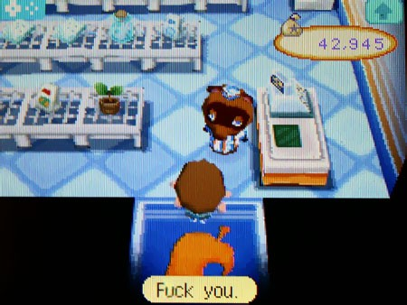
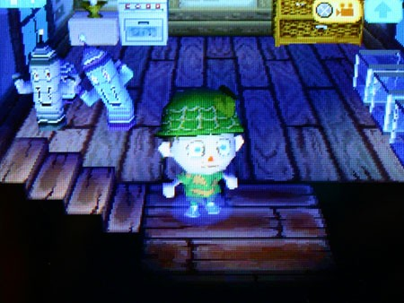
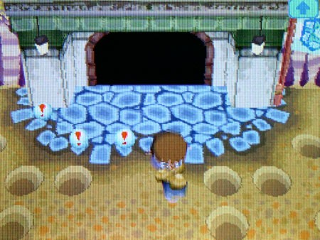
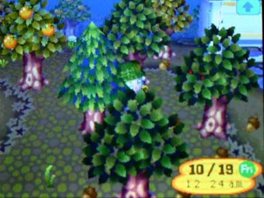
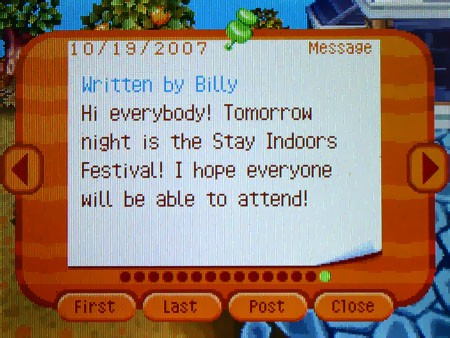
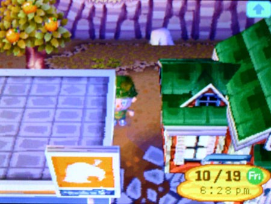

Всё шло по одному и тому же кругу. Взлёт перед падением. Жизнь вроде бы налаживается, становится легче; ты уже видишь этот чёртов свет в конце тоннеля — и тут опускается молот, и тебя разносят в пыль, опуская на дно, о существовании которого ты даже не догадывался.

Но, как ни странно, жизнь продолжается.
Мне невероятно повезло, что Пенни была со мной. Если бы я остался один, понимание этого могло бы меня сломать — я бы просто лёг и умер. Но мы делили друг с другом отчаяние, и это каким-то необъяснимым образом делало жизнь терпимой, даже в самые тёмные моменты. Поодиночке мы были просто детьми, которые боятся даже шагу сделать. Вместе мы чувствовали, что можем справиться с чем угодно. Даже с Нуком.
Нам потребовалось время, чтобы понять, как мы здесь оказались. Мы оба не помним дорогу — в такси мы отключились, и ничего не видели из-за ливня. Единственное объяснение, которое мне приходит в голову — нас чем-то накачали, каким-то газом, к которому у таксиста-лягушки был иммунитет. Кто знает, сколько километров мы проехали?
Но тогда возникает главный вопрос: как мы оказались на острове? Пенни говорит, что уже не помнит его лица — она здесь уже несколько лет, — но я помню того странного водителя.

Он хотел, чтобы я называл его Кэп'ном. От него исходил странный, рыбный запах, и он был первым, с кем довелось мне познакомиться. У него был солёный говор — как у старого рыбака, давно вышедшего из возраста. Единственное объяснение, которое имеет смысл, — это то, что у этого человека есть лодка, возможно, достаточно большая, чтобы на неё можно было загнать машину. Может быть, он даже управляет автомобильным паромом, вроде тех, на которых моя семья ездила во время наших путешествий по стране. Пенни считает, что это, скорее всего, так и есть — она всегда задавалась вопросом, как они находили бутылки с её посланиями, которые она бросала в море.
Но наш метод похищения может стать нашим способом побега. Глядя на карту, которую мы собрали, кажется, есть два логичных места, где может быть причален паром или лодка — на западной или восточной оконечностях, где, судя по всему, нет огороженных лагерей.

Лучшим вариантом был бы угон его собственной лодки — надёжный способ сбежать, и, если повезёт, они не смогут нас догнать. Мы только молились, чтобы она не была парусной.
Мы знали, что не сможем вытащить всех сразу — нас было в десять раз меньше, чем их. Очевидно, помощь придётся отправлять потом.
Но сначала нужно было выбраться из собственных лагерей, и я терпел в этом неудачу с завидным постоянством. Даже с мыслями о побеге и дружбой с Пенни, гироиды висели в моей голове как грозовые тучи. Как я мог сбежать и забрать их с собой?
Я думал об этом всего пару месяцев, но у Пенни была целая сотня планов.
Водный путь был слишком опасным — слишком много факторов, влияющих на успех побега.

Билли:«Пошло оно всё нахуй.»С берега мы видели, как в океане бьются огромные волны — выше трёх метров. Мы знали, что у нас просто не хватит сил их преодолеть. А одна мысль о том, чтобы строить плот под носом у Нука и его ищеек, заставляла меня вздрагивать. Пенни наказали за одни только бутылки с письмами — я даже представить не хочу, что бы они сделали, если бы запалили меня за подготовкой побега. И ещё этот Кэп'н с его лодкой, на которой он, судя по всему, патрулирует воду.
Но и сухопутный путь казался не менее безнадёжным.

Билли:«И это пошло нахуй.»Как и в моём лагере (и во всех остальных, скорее всего, тоже), Пенни сказала, что у ворот круглосуточно дежурят сторожевые собаки. Ворота открывались только для того, чтобы впускать или выпускать животных-жителей, и делали это только тогда, когда были уверены, что никто не смотрит. Но у нас была одна зацепка: со временем Пенни выяснила, что есть кто-то, кто никогда не пользовался воротами. Том Нук.

Билли:«И ты пошёл нахуй.»Нам надо было понять, как Нук перемещается между лагерями после закрытия своей лавки.
У Пенни была проблема: Нук почти не появлялся в её городе, и тут я оказался полезен. Я думал: почему вижу Нука так часто, если лагерей так много? Может, у него есть клоны? Звучит как бред, даже после всей хуйни, что мы видели. Скорее всего, Нук сосредотачивается на свежих жертвах, пока не сломает их или не решит, что они слишком глупы, чтобы что-то понять. Я доставал его, так что он мог задержаться дольше обычного.
Я бы никогда не допёр до этого сам. Мы с Пенни вместе разработали план и начали действовать на следующий же вечер.

Время действовать.
Нук не пользуется воротами, чтобы передвигаться по острову, и нам не нужно, чтобы сторожевые псы мешали нашему плану. Как можно менее палевно, я провёл день, «копая окаменелости» перед воротами моего лагеря. Пенни помогла мне разработать яму-ловушку, которую я прикрыл сверху, чтобы замаскировать ямы.

Если эти псы вылетят из ворот, яма их притормозит.
Ещё проблема: как только Нук вечером выйдет из лавки, следить за ним станет сложно. Придётся всё время быть в маскировке и не попадаться на глаза жителям, которые ещё шастают по лагерю в сумерках. Я буду прятаться за деревьями и делать короткие перебежки, чтобы меня не заметили.

Зная, как они любят всякую дебильную херню с фестивалями, я повесил объявление — пусть самые тупые из них закроются в домах и не высовываются.

Объявление от Билли:«Всем привет! Завтра вечером состоится Фестиваль «Сидим дома и кайфуем»! Надеюсь, все смогут принять участие!»Ещё одна проблема заключалась в том, что, сбежав, я не мог просто бросить городок, подняв тревогу. Как только я узнаю, где находится тайный путь Нука, нам придётся найти такой же и для Пенни — желательно в похожем месте. Затем нам нужно будет снова попытаться найти причал и угнать лодку. Всё это было очень рискованно и сложно, и, честно говоря, чем дольше мы ждали, тем сильнее сдавали нервы. Даже думать не мог о том, что с нами будет, если нас поймают.
Момент истины. Я не мог рисковать быть замеченным, поэтому я вслушивался в гудок и шорох автоматической раздвижной двери, которые ознаменуют уход Нука.

Я спрятался за углом этой «забегаловнуки», солнце медленно садилось за горизонт, и меня начало трясти от паранойи. Я подпрыгивал от каждого шороха листьев и жужжания мошек. Я то и дело косился на ворота лагеря, ожидая, что сейчас оттуда вылетят сторожевые псы, перемахнут через ямы и всадят свои копья мне в грудь.

И я просто ждал. Это была самая долгая ночь в моей юношеской жизни.